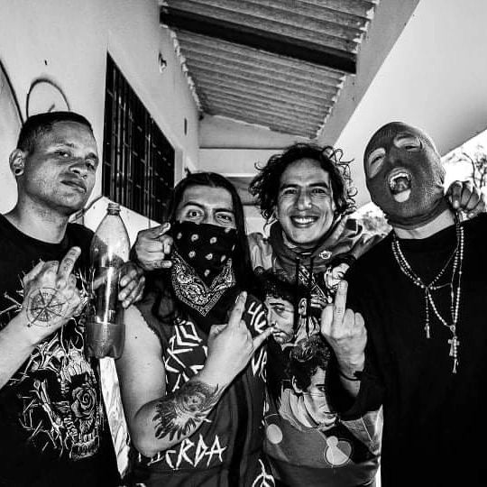

Chucha Punk Rock tiene su origen el 21 de Noviembre del 2021. Nace bajo el nombre de Les Abudineo, la banda se conformó en los primeros ensayos con: Iván Nuñez, (Guitarra y coros) Johan López, (Baterista Suplente) Jhon Galvis, (Bajo y coros) Daniel Vega, (Baterista Principal) Sebastián Silva (Voz) dicha alineación participo en las grabaciones y posterior lanzamiento del primer compilado punk de la sabana.
Chucha
Punk Rock
Durante el 2022 formo parte del cartel del Madrid Metal Forces 5 (MMFV) compartiendo escena con bandas de la trayectoria de: Victimized, Ray Morgan, Sadictic Mutilation, Cuentos de los Hermanos Grind y Neurosis.
Para Junio del mismo año se disuelve la primer alineación por diferencias creativas, posicionamiento y proyección del nombre de la banda. Para este mismo año se graban las cinco maquetas que tiene en su peculio sonoro hasta el momento.

Iván y Johan deciden no terminar el proyecto y mantenerlo a flote entre Junio del 2022 y Noviembre 2023 con sus maquetas grabadas pensamos en dejar el nombre y la identidad atrás de Les Abudineo y pasar a llamarnos Chucha Punk Rock. "Chucha" es la denominación que se le da a la familia de la Zarigüeya en regiones de la costa, es el animal más punk de la naturaleza es incomprendida, marginal y asesinada por la ignorancia de quienes no conocen y juzgan sin disfrutar. Aprovechamos la influencia de Les Abudineo. Decidimos conservar la esencia de su música cambiando el nombre y manteniendo la propuesta con otros rostros.
Durante ese periodo de "inactividad en la escena" los ensayos continuaron de forma intermitente con músicos que apoyaron los orígenes de la banda (Juan Sin Palabras Guitarrista y compositor de la banda de música andina "Trascendencia Tibaitata" y Felipe Vélez; Bajista y leyenda del metal colombiano de la banda "Requiem") Johan pasa de ser el baterista suplente de la banda a ser el principal y se consolida como fundador de lo que fue Les Abudineo, hoy en día Chucha punk rock, Iván y Johan siguen trabajando en desarrollar su primer LP llamado "Zoo-siedad" que consiste en diez a trece canciones casi todas con nombres de animales referentes a la nefasta cultura de la política colombiana dicho trabajo contiene títulos de Canciones como:
Las Ratas, Los Camaleones, Elefante Blanco, Los Delfines, Los Cerdos y Perro Con Perro
El pasado Diciembre de 2023 retomamos nuestra actividad en escena participando en dos eventos: Lanzamiento la sala de ensayo "El Sonido" Madrid, Cundinamarca con las bandas locales de: Subversivoz Rapcore, Naive, Eleven y Terrah y "Yo No Olvido El Año Viejo" Facatativá, junto a un cartel de bandas de Bogotá y la Sabana: Accion Mutantex, Kartarsis, Plastaz ambas presentaciones contando con la alineación definitiva de Chucha Punk Rock:
- Ivan Nuñez (Guitarra y Voz Principal)
- Johan López (Batería)
- Jorge Bejarano (Bajo y coros)